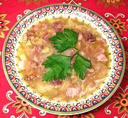

|
Chestnut SoupSpain - Galacia - Sopa de Castañas | ||||
| Serves: Effort: Sched: DoAhead: |
5 soup ** 2-1/2 hrs Most |
A substantial and satisfying soup, very easy to make (provided you have peeled chestnuts), and a fine way to use those chestnuts that broke up during peeling. | |||
|
|
10 5 1 4 4 1/2 7 ------ ar 2 3 2-1/2 |
oz oz cl oz oz t c --- oz T T |
Chestnuts (1) Onion Garlic Serrano Ham (2) Salt Pork (3) Salt Water -- Finish Bread, sliced Onion Olive Oil, ExtV Sherry Vinegar (4) |
Chestnuts, before the blight, were major sustenance in Spain, so there are plenty of fine Spanish recipes for them. Make - (2-1/2 hrs - 30 min work)
|